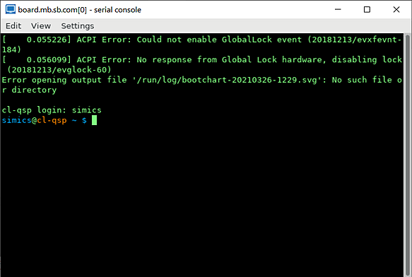

Simics allows to save on disk the state of simulation and, thus, the state of all target machines for later use. We call a saved state a checkpoint. Other simulators may refer to a saved state as a snapshot.
In this section:
We assume that a user knows how to start Simics and how to get access to Simics CLI.
Creating a checkpoint:
start simulator and create a target machine from Simics CLI by executing the targets/qsp-x86/firststeps.simics script with Simics run-command-file command:
simics> run-command-file targets/qsp-x86/firststeps.simics
run the machine until Linux is booted:
simics> run

stop simulation:
running> stop
simics>
create a checkpoint by running the write-configuration Simics command and specifying a destination where to store a checkpoint:
simics> write-configuration target-booted.ckpt
quit Simics:
simics> quit
The target-booted.ckpt directory created on step 5 above contains saved simulation state.
Restoring from a checkpoint:
start Simics
on the Simics CLI enter the read-configuration target-booted.ckpt command:
simics> read-configuration target-booted.ckpt
simulation state from the target-booted.ckpt checkpoint is restored now. We can see a text terminal window of the target machine with Linux prompt. We can resume simulation with the run command:
simics> run
running>
Useful information about checkpoints can be found in the documentation of the write-configuration and read-configuration commands (the documentation can be obtained from Simics command-line interface by running the help command like this: help write-configuration).